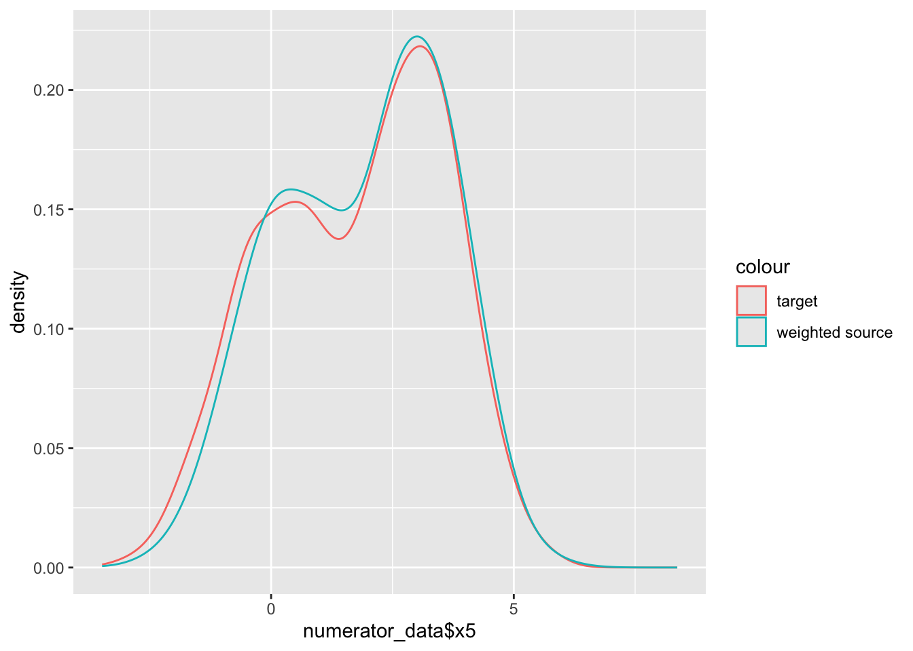
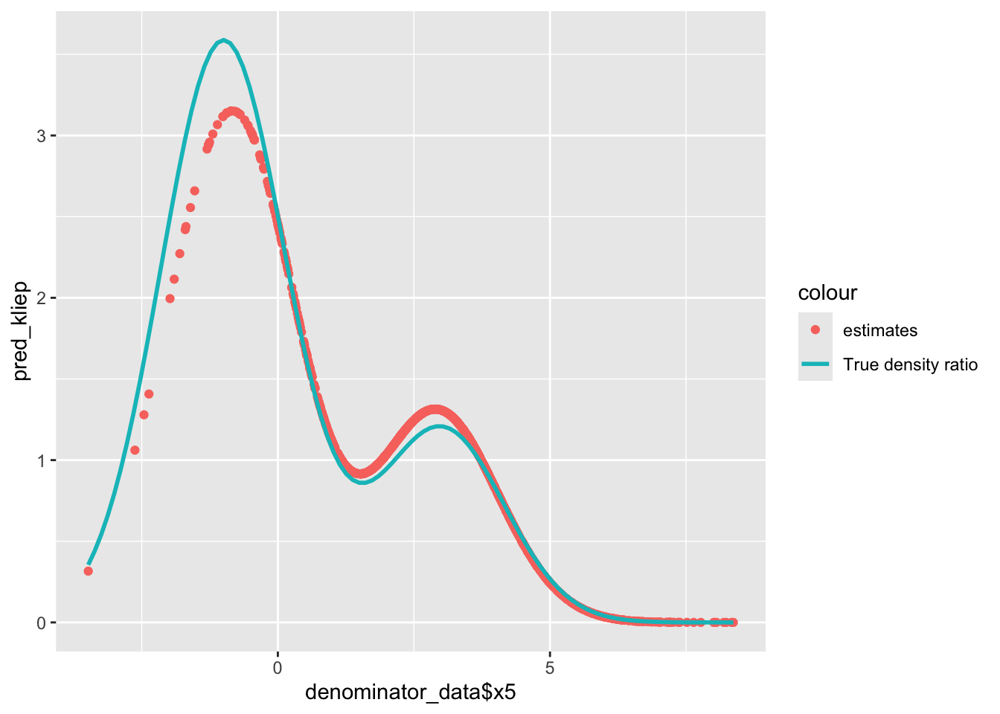

Inspired by the idea that MLE is equivalent to minimizing KL divergence:
\(KL(\mathbb{P}^{(0)}||\tilde{\mathbb{P}}^{(0)}) = \mathbb{E}_{X \sim \mathbb{P}^{(0)}}[log(\frac{d\mathbb{P}^{(0)}}{d\mathbb{P}^{(1)}}(X))] - \mathbb{E}_{X \sim \mathbb{P}^{(0)}}[log \hat{w}(X)]\)
We can estimate the density ratio \(\hat{w}\) by minimizing KL divergence \(D_{KL}\) (maximizing \(\mathbb{E}_{X \sim \mathbb{P}^{(0)}}[log \hat{w}(X)]\)).
Estimator:
\(\hat{w} = \arg\max_{h: X \to \mathbb{R}_{+}}\{\mathbb{E}_{X \sim \hat{\mathbb{P}}^{(0)}}[log h(X)] - \mathbb{E}_{X \sim \hat{\mathbb{P}}^{(1)}}[h(X)]\}\)
In practice, we use a specific function class \(\mathcal{G}\) (e.g. RKHS with a universal kernel) to estimate \(h: X \to \mathbb{R}_{+}\)
# To install 'densityratio' package, we need libraries:
library(osqp)
library(pbapply)
library(RcppProgress)
#install.packages('densityratio', repos = 'https://thomvolker.r-universe.dev')
library(densityratio)## Warning: package 'densityratio' was built under R version 4.4.2head(numerator_data)## # A tibble: 6 × 5
## x1 x2 x3 x4 x5
## <fct> <fct> <dbl> <dbl> <dbl>
## 1 A G1 -0.0299 0.967 -1.26
## 2 C G1 2.29 -0.475 2.40
## 3 A G1 1.37 0.577 -0.172
## 4 B G2 1.44 -0.193 -0.708
## 5 A G1 1.01 2.23 2.01
## 6 C G2 1.83 0.762 3.71fit_kliep <- kliep(
df_numerator = numerator_data$x5,
df_denominator = denominator_data$x5
)
summary(fit_kliep)##
## Call:
## kliep(df_numerator = numerator_data$x5, df_denominator = denominator_data$x5)
##
## Kernel Information:
## Kernel type: Gaussian with L2 norm distances
## Number of kernels: 200
## Optimal sigma: 0.5161011
## Optimal kernel weights: num [1:200, 1] 0 0 0.1127 0 0.0318 ...
##
## Kullback-Leibler divergence between P(nu) and P(de): 0.2798
## For a two-sample homogeneity test, use 'summary(x, test = TRUE)'.# Predict estimated density ratio
pred_kliep <- predict(fit_kliep, newdata = denominator_data$x5)
summary(pred_kliep)## V1
## Min. :0.0000104
## 1st Qu.:0.5044126
## Median :1.0171172
## Mean :1.0000000
## 3rd Qu.:1.2679524
## Max. :3.1508022# Function of true density ratio
dbinorm <- function(x, p, dif) {
p * dnorm(x, 0, 1) + (1 - p) * dnorm(x, dif, 1)
}
dbinorm_scaled <- function(x, scaling, ...) {
dbinorm(x, ...) * scaling
}
dnorm_scaled <- function(x, scaling, ...) {
dnorm(x, ...) * scaling
}
dratio_kliep <- function(x, p, dif, mu, sd) {
dbinorm(x, p, dif) / dnorm(x, mu, sd)
}ggplot() +
geom_density(aes(x = numerator_data$x5, colour = "target")) +
geom_density(aes(x = denominator_data$x5, colour = "source"))ggplot() +
geom_density(aes(x = numerator_data$x5, color = "target")) +
geom_density(aes(x = denominator_data$x5, weight = as.numeric(pred_kliep), color = "weighted source"))
ggplot() +
geom_point(aes(x = denominator_data$x5, y = pred_kliep, col = "estimates")) +
stat_function(mapping = aes(col = "True density ratio"),
fun = dratio_kliep,
args = list(p = 0.4, dif = 3, mu = 3, sd = 2),
linewidth = 1)
We use R packages ‘densityratio’ which contains sample data and kernel-based density ratio estimation methods.